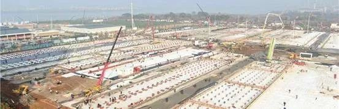
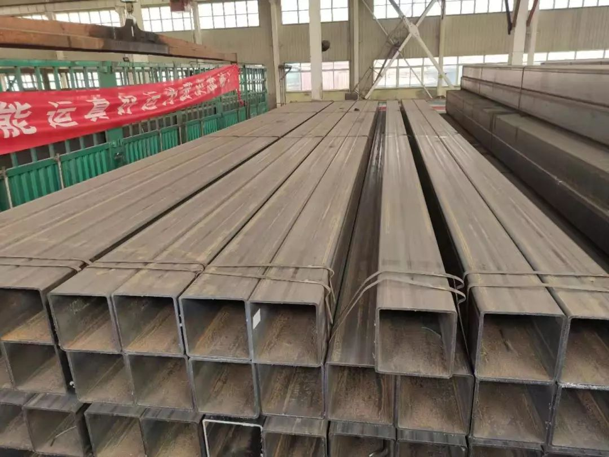
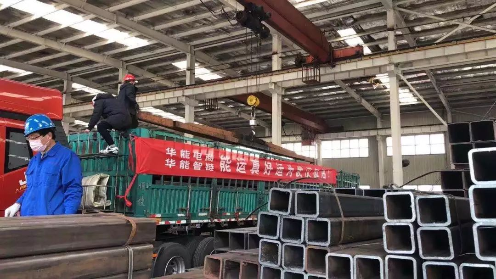

全国人在吃年夜饭 ，他们在建“武汉小汤山”
原文链接 备份链接 本文约2008字 预计阅读时间6分钟 中青报·中青网武汉前方报道组 全中国人在享用年夜饭的时候，武汉版“小汤山医院”的工地上，“场平”工作已接近完成。中国青年报·中国青年网记者在施工现场看到，上百台挖掘机同时在开动，负 …


作者 | 薛芳 编辑 | 康晓
出品｜深网·腾讯小满工作室
欢迎下载腾讯新闻APP，阅读更多优质资讯

_编者按：_牵一发而动全身，面对疫情，需要中国全行业上下游携手共度难关，深网推出《共克时艰》系列报道，是为第二篇，记录中国华能旗下公司驰援雷神山医院建设的经历。
要快，要更快。
天津姑娘方小玙接到了一项任务，把32.5吨方钢从天津运往武汉军运村，这些钢材是武汉雷神山医院ICU病区建设所需的方管。
1月23日，武汉市新型肺炎防控指挥部宣布，将在武汉蔡甸和江夏两处同时开工，建设床位约1000个的火神山医院于2月2日交付投用；拟建床位约1500个的雷神山医院于2月5日交付投用。
中国华能旗下上海电商公司总经理胡俊和业务总监王飞，与火神山和雷神山供应链合作伙伴中建三局取得联系，沟通建设医院的物资需求。获知雷神山医院ICU病房工程用方管的需求后，王飞在天津找到了一批方管。

而运输的任务落到了华能旗下的华能真好运平台，这是一家物流行业的O2O公司。方小玙是华能真好运公司天津的员工，重任落到了她的肩上。她感觉到了时间的紧迫性，对她来说，第一时间就是找车。
如果放在平常，找车非常简单。这是因为过去一周多时间，全国各地的物资正紧急运往武汉等湖北疫区，正值春节假期，大部分运输公司刚好处于“半歇业”状态，可以调动的运力资源本就有限，隔离政策加剧运力匮乏。
1月30日（大年初六）晚上十一点十四分，方小玙微信联系了8家过去合作过的物流公司，有三家电话可以打得通。半个小时后，12点28分，有一家答应方小玙可以送货，她才觉得踏实了些。
差不多同一时间节点，华能真好运的CEO曹猛给方小玙和财务总监拉了一个群。曹猛告诉财务总监，请他协助付款的工作。所有的准备工作都做完，已经凌晨两点多了。方小玙发现老板到两点也没休息。
整个春节，曹猛在上海过了一个大年初一，就匆匆返回无锡了，因为真好运调车的团队在无锡。整个春节假期，到1月27日的时候，整个货运的需求量变得非常大。曹猛告诉《深网》，他一直找各种各样的运力，把到武汉的物资运送过去。
把天津方钢运送到武汉，曹猛就全权委托给方小玙。方小玙睡了四个小时，第二天早晨，财务总监第一时间把所有的文件都准备好了。万事俱备，只欠东风。方小玙在等车到达天津，结果车不来了。
1月31日早晨六点多，方小玙得到信息，答应送货的那个司机反悔了，家里人不让他去。方小玙很理解司机师傅，司机师傅从武汉回来要隔离14天。
她继续跟另外几家物流公司联系，在6点38分的时候确定了承运车辆，河北籍师傅周志洪。

联系好车辆后，方小玙开始着手落实垫付款，因为财务总监已经确认好了付款手续。
8点20分，真好运员工刘建檀来到了天津静海区中兴储运院内，他从家打车过来花了50分钟。今年31岁的刘建檀，30号晚上从老家刚刚开车回天津。
刘建檀来到装货现场后，在仓库检验货物，与工厂联系人见面完成对接后，他开始准备装货文件、司机委托合同、代付货款委托书、装车明细等相关材料。

“爸爸去支援疫区了”
货车司机是河北沧州东光人，叫周志洪，今年37岁，疫情施虐，整个春节周志洪都窝在家里，没有出门串门。周志洪开了十年的大货车，对他来说，从天津到武汉这1100公里不长，但雷神山医院的建设，是多么重要的事情。
他答应接下这单货，同时，他在心理默默做了决定，为了不让家人担心，他不告诉家人他去那里。虽然武汉是疫区，在周志洪看来，城里还有上千万人，不可能人人都染病，再说他过去也只是卸个货。
一大早，天刚蒙蒙亮，周志洪从河北沧州出发前往天津，12点40分，他到了装货现场。周志洪，刘建檀和库房两名工人师傅开始装车。
所有人都在争分夺秒。

“工人师傅指挥倒车的间隙，我和另一名师傅开始验货点数，因为成捆的方管有4根和3根两种，所以根据车辆载重和稳定性，做了一下装车计划，装车时一名工人师傅控制吊车另一名师傅记录磅数，我和司机师傅在车上挂钩、摘钩。指挥吊车微调。”刘建檀向《深网》描述。
13点07分，全部货物装车完毕，刘建檀长舒了一口气，他看了看四周。当天装货只有他们这一辆车，装货的过程中大家都带着口罩，装完货就匆匆回家了。14点07分，方小玙完成货款代付工作，根据发货清单制作货物签收单。
15点，周志洪带好所有文件自提货地出发，驶向京台高速。他设计的线路是京台高速-大广高速-沪蓉高速-目的地，总共1100公里。他准备好了防护服，口罩和手套。
在中国，像周志洪这样的卡车司机太多了，他们在公路上穿梭，承担了70%以上的货运量。道路绵延和起伏，开了10个小时后，已是凌晨。或许是因为正月的缘故，路面上车并不多，路况也算良好，但周志洪很困了。
大货车行驶到山东菏泽曹县服务站的时候，周志洪休息了一次，加油吃饭稍作休整，停留了4个多小时，本想睡一觉再出发，但是他路上接到了通知，这批货非常急，必须赶在2月1号下午到。
货车驶出沪蓉高速，驶入武汉境内时，他看到了身穿防护服的检查员，他心里生出了一丝紧张和不安，但这种不安很快就消解了。
2月1日下午1点，周志洪的车到了武汉军运村，19个小时他开了1100公里，他整个人放松了下来，他觉得他完成了一项任务。

周志洪开了十年的大货车，他觉得以往都是在送货，但这次送钢材不同。他觉得到家了就可以告诉家人，他去了武汉，告诉孩子，“爸爸去支援疫区去了，不是去跑长途了。”
雷神山医院所需的32.5吨钢材，仅仅19个小时，就从天津静海区运到了武汉军运村，这仅仅是雷神山医院建设中一个争分夺秒的小细节。而若干的小细节的汇聚在一起，就足以解释为什么十天能建成一所医院。
十天建成一所医院
2月3日，火神山医院已经交付。雷神山医院的建设进展如何？
2月2日，武汉雷神山医院项目总体进度完成65%。隔离区完成60%，3300间集装箱，已到场2530间；土建部分完成约60%；隔离病房场地平整、沟槽开挖、沟槽管线预埋、沟槽回填、主管道面层浇筑、非沟槽区PE膜施工已全部完成。
距离武汉市中心20公里的西南角，已经是一个巨大的工地，机器的轰鸣声，焊接声，平安安静的黄家湖大道上，各种车辆、运送着货物，在马路上来回穿梭，还有正在工地上忙碌的工人们。
央视正在云直播着这场全国人们都关注的建筑工程——雷神山医院建设现场。透过24小时在线直播镜头，世界亿万人注视着医院建设的每一秒。
中建三局是雷神山医院的承建方，中建三局第一建设工程有限责任公司山东公司副总经理朱国升在接受采访时表示，接到命令后，中建三局一公司华南公司支援120套厢式板房，用30余辆35吨位的货运车连夜运往武汉。
华东公司连夜运送集装箱510个、走道箱100个；西部公司承担210套标准箱、200套走道箱施工任务；北方公司支援1134套厢式板房……
这些物资包括汽车吊平板车、叉车、登高车、发电机等基础建设工具，也包括塑料管、洁具、配电箱、分体空调、紫外线杀菌灯、电加热灭菌机组等安装组件。与此同时，承建方中建三局全国施从工人员到管理人员，也整装向武汉出发。
朱国升介绍，在武汉施工现场，工程系统安排井井有条，不同的公司根据自身的特点进行相应施工，分别处理基建、医疗隔离区、医疗污水处理、室内设计、排水等。“我们统一指挥、分工建设、同时制造，才能保证速度。”
朱国升所在的中建三局一公司山东公司负责搭建火神山医院的5000平米板房和为雷神山医院建设供应1134套箱式板房。通过内部系统工程优化，工期大大缩短，速度得到保障。
“施工现场，建设团队不分昼夜，歇人不歇工，中建三局的员工大多来源于湖北，大家都憋着一股劲，必须以‘中国速度’跑赢疫情。”朱国升接受采访时表示。
此外，全国各地的物资也都在向武汉汇聚。
5000平米板房、2134套箱式板房、1500多吨板材、31.43吨高质量彩涂板，32.5吨方钢……这些建筑部件和物资，争分夺秒，源源不断从全国各地运抵武汉火神山、雷神山医院。
现如今，火神山医院已经建成，雷神山医院的建成指日可待。


感谢您的阅读，欢迎在文后留言并点击“在看”，留言点赞第一名且60以上，获得一个月腾讯视频会员哦~ （截止时间：下周一下午18：00）
扫码查看腾讯新闻客户端相关文章


本文版权归“腾讯新闻”所有，如需转载请在文后留言，经允许后方可转载，并在文首注明来源、作者及编辑，文末附上深网二维码。
第534期

点击“阅读原文”，查看腾讯新闻客户端相关独家文章！
你“在看”我吗？

文章已于修改
原文链接 备份链接 本文约2008字 预计阅读时间6分钟 中青报·中青网武汉前方报道组 全中国人在享用年夜饭的时候，武汉版“小汤山医院”的工地上，“场平”工作已接近完成。中国青年报·中国青年网记者在施工现场看到，上百台挖掘机同时在开动，负 …
原文链接 备份链接 数据来源：腾讯新冠肺炎疫情实时追踪 截至2月3日早上7时， 全国新冠肺炎确诊个案16615例， 武汉确诊个案5142例。 根据1月31日湖北省疫情新闻发布会， 截至30日24时， 武汉地区共有6万余名医务工作者参与救 …
原文链接 备份链接 大家好，我是田静。 疫情爆发最严重的那几天，我家的亲戚被隔离了。 听到消息后家里人都吓得不轻。原来是亲戚小龙春节前去过武汉一晚，回来后就发烧、胸闷、呼吸困难，在老家农村，只能监管，不能诊治。 每天在家隔离，实时向当地村 …
原文链接 备份链接 拥有1000张床位的火神山医院今天开始接收病人，主要救治确诊患者。 1400位来自军队的医护人员已经抵达，院长张思兵大校是SARS防治专家。 拥有1600张床位的雷神山医院预计2月5日完工。 两家医院投入使用一 …
原文链接 备份链接 文/杜圆圆 编辑/单一 根据预测，新冠肺炎或将在一周后，迎来新的爆发期。从去年12月初被发现，到目前为止，疫情已经持续了两个月的时间。 从始至终，医护人员一直是最前线的逆行者。武汉这座刚崛起的新一线城市，成了全中国最惨 …